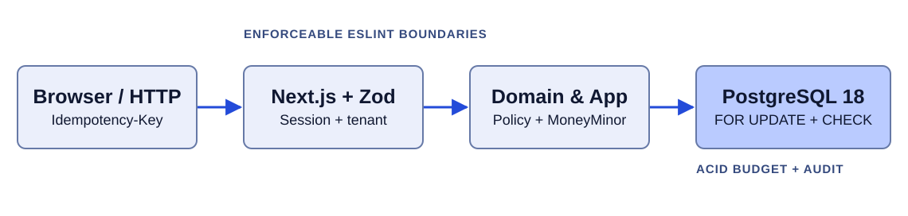
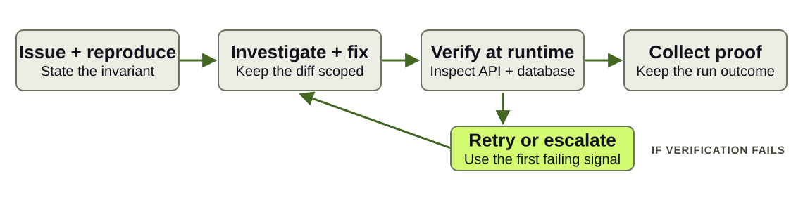
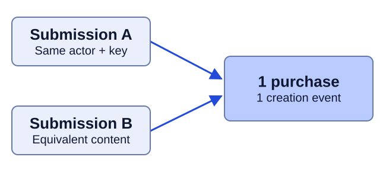

Packt advanced workshop · December 11, 2026
GrokBot for Enterprise Engineering Workflows
From Issue to Verified Pull Request
The reviewer’s question
What would you need to see before approving a pull request written by an agent?
Enterprise agentic engineering is building environments where agents can reliably prove their changes preserve invariants.
Incident → Invariants → Verification → Human decision
Pillar 01 / 04
Enterprise Codebase Foundations & Enforceable Architecture
Encode financial and boundary invariants in code, not prose.
Procurement Hub · Multi-tenant Cost Centers, approval limits, financial commitments, and audit trails.
PH-42 · Concurrent financial incident
Two $7,000 approvals overspend a $10,000 budget
Northstar Cost Center CC-ENG-01 has $10,000 allocated. Requests A and B need $7,000 each. Concurrent approval commits $14,000 (-$4,000 available).
INV-01–10: committed ≤ allocated · idempotent retries · tenant isolation · auth on replay.

Layers 01–02 · Architecture + deterministic checks
Follow the invariant to the write boundary

- Browser / HTTP · Idempotency-Key
- Next.js + Zod · Session and tenant
- Domain & App · Policy and MoneyMinor
- PostgreSQL 18 · FOR UPDATE and CHECK
bun run verify:architecture proves ESLint rejects forbidden imports across domain, application, infrastructure, and UI layers.
Pillar 02 / 04
Harness Engineering & Reusable Verification Skills
Give agents an executable way to drive the real system.
- 8 Feature Maps
- verify-procurement skill
- Launch + doctor
- Drive + evidence + cleanup
Live demo · 12–20 min
Exercise budgets, limits, audit, and isolation
- Cost CentersInspect $10,000 CC-ENG-01 budget and submit a request as Northstar Requester.
- Approver PolicyJunior ($5k limit) blocked with 403; Senior ($25k) commits funds atomically.
- Audit & IsolationNorthstar Auditor traces 1:1 events; Meridian gets 404 on foreign IDs.
Open Procurement Hub locally · run bun run lab:doctor first
Pillar 03 / 04
Runtime Verification & Self-Correcting Agent Loops
Reproduce live, diagnose root cause, fix, and falsify claims.
PH-42 · Bounded loop with anti-spin hypothesis guard & real PostgreSQL feedback
Live Starter Reproduction · 20 min
Observe the real PostgreSQL budget overrun
bun run ph42:reproduce- 200 + 200
- Concurrent approvals
- $14,000
- Committed vs $10,000
- -$4,000
- INV-01 & INV-02 violated
Real Next.js + PostgreSQL 18 on workshop/starter · expected exit 1
Live GrokBot Loop · 24–36 min
Bounded self-correction driven by real feedback

- Reproduce live against PostgreSQL
- Formulate hypothesis and scope change
- Run deterministic and runtime gates
- Revise hypothesis or escalate on budget
loop-runner.ts persists state/handoff, enforces 2-retry cap, anti-spin, and scope guard.
Root fix: SELECT ... FOR UPDATE + DB CHECK + decision_idempotency_keys + auth-before-replay.
Live Solution Proof · 36 min
One approval commits. The second rejects cleanly.
bun run ph42:reproduce- 200 + 409
- INSUFFICIENT_BUDGET
- $7,000
- Committed ($3,000 left)
- 1 + 1
- Commitment & APPROVED audit
Layer 04 · Prepared Formal Verification (48–53 min)
Check the contract. Run the app. Model-check the race.
- Property-based (fast-check)
- 400 randomized multi-tenant budget & retry cases (pinned seed 4207). Not formal proof.
- TLA+ counterexample (exit 12)
defective-read-commit.cfg: 7-step trace violatesBudgetNotExceeded($14k > $10k).- TLA+ exhaustive check (exit 0)
locked-atomic.cfg: 473 generated / 225 distinct states, 0 queued, all 6 invariants hold.
Pillar 04 / 04
Evidence-Based Software Delivery & Enterprise Governance
Bind every claim to an exact revision and independent gate.
- 6 split CI jobs
- governance-guard
- summary.md + manifest
- Human approval
Live demo · 40–48 min · Layer 05 Governance
Would you approve this exact revision?
- Match the SHACompare PR head against
summary.md,manifest.json, and 6 CI jobs. - Audit governance-guardConfirm acceptance criteria, ESLint rules, and tests were not weakened.
- Own the mergeAgents investigate and verify; authorized humans approve and merge.

Reusable Enterprise Starter Kit · 53 min
Leave with an engineering system you can adopt incrementally

- 12 Starter Kit templates
- Architecture checklist, AGENTS.md, Feature Maps, Verification Skill, TLA+ starter
- Harness & Loop
- Isolated lifecycle, DB snapshots, anti-spin loop, persisted handoffs
- Governance
- 6-job least-privilege CI, governance-guard, 11-section PR template
Lauren Tan’s pstack · portable adaptation in starter-kit/
Q&A · 53–60 min